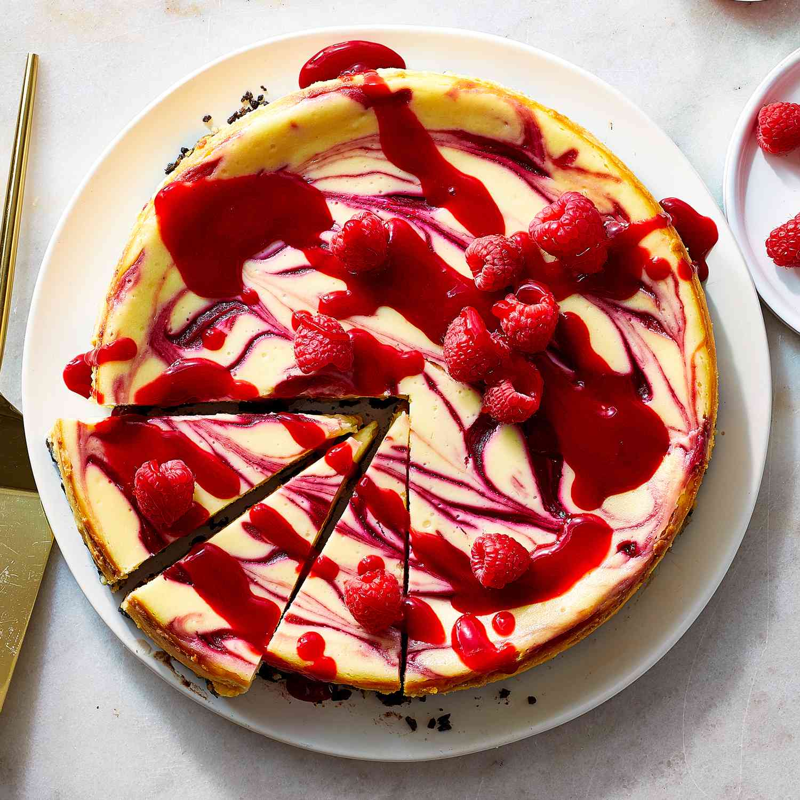

Raspberry Cheesecake
by Odin Recipes

Description
Mary Berry's no-bake white chocolate and raspberry cheesecake recipe can be prepared in advance, making it perfect for a dinner party.
For this recipe you will need a deep 20cm/8in spring form tin, an electric hand whisk and a blender.
Ingredients
For the base
- 150g/5½oz digestive biscuits
- 75g/2¾oz butter, plus extra for greasing
For the filling
- 250g/9oz mascarpone cheese
- 300ml/10fl oz double cream
- 1 tsp vanilla extract
- 200g/7oz white chocolate, broken into chunks
For the coulis
- 400g/14oz fresh raspberries
Method
- Grease the base of a 20cm/8in springform cake tin with butter, then line with a circle of baking parchment.
- To make the cheesecake base, put the biscuits in a plastic bag and crush with a rolling pin until it resembles fine crumbs but still has texture. Melt the butter in a small saucepan over a low heat. Add the biscuits and stir. Spoon into the base of the tin and press using the back of a spoon until level, then cover and chill in the refrigerator.
- To make the filling, put the mascarpone and double cream into a bowl and whisk with an electric hand whisk until it is smooth and has very soft peaks. Stir in the vanilla.
- Put the chocolate into a small heatproof bowl, and place on top of a pan of simmering water. Stir until melted but not hot. Set aside for 5–10 minutes, until cool but still liquid. Pour into the mascarpone and stir, but be careful not to over mix.
- To make the coulis, put half the raspberries in a small blender. Blitz until runny, then pour through a sieve into a bowl to remove the seeds.
- Spoon half of the white chocolate mixture over the base. Use the handle of a teaspoon to make a few narrow holes in the mixture right down to the base. Pour or pipe the coulis into the holes, reserve some for decorating. Spoon the remaining white chocolate mixture on top, then smooth and level it. Cover with cling film and chill for at least 6 hours, or overnight.
- Run a palette knife around the edges of the tin. Remove the sides and base and sit on a plate. It may be easier to serve on the base or carefully run a knife under the biscuit base to release. Arrange the remaining raspberries on top of the cheesecake and drizzle over the remaining coulis.